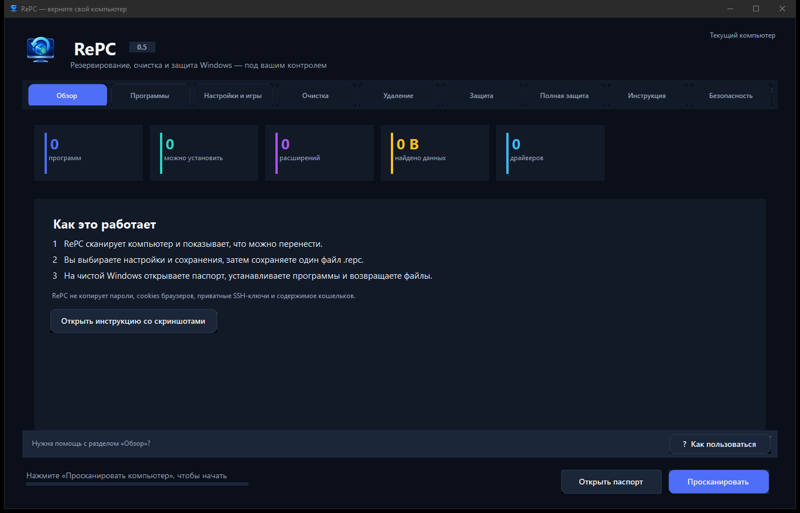
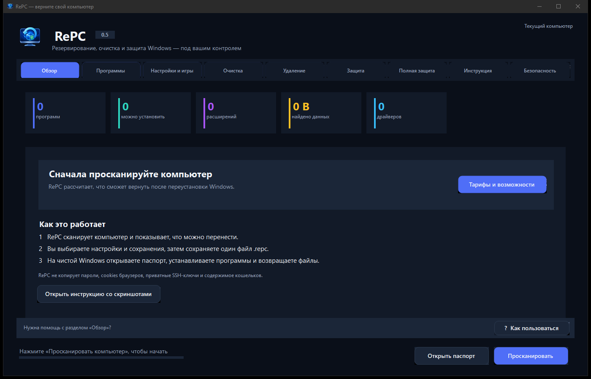
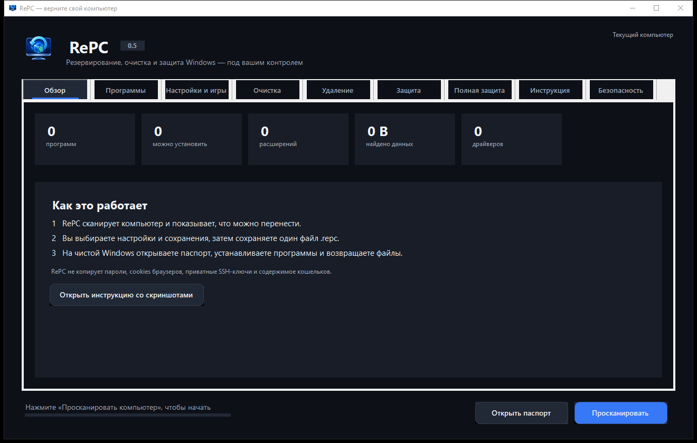

Программы
Находит установленные приложения и сопоставляет их с официальными пакетами WinGet.
Утилита для Windows 10/11
RePC создаёт локальный паспорт: программы, настройки, игровые сохранения, драйверы и выбранные папки. После чистой установки вы возвращаете только нужное.
Без регистрации · Данные не уходят в облако · Windows 10/11
Что делает RePC
Сканирование показывает состав компьютера. Вы проверяете результат, отмечаете нужное и сохраняете переносимый архив.
Находит установленные приложения и сопоставляет их с официальными пакетами WinGet.
Документы, рабочие папки, настройки редакторов, браузеров и игровых лаунчеров — только по вашему выбору.
SHA-256, защита от path traversal и запрет перезаписи существующих файлов при восстановлении.
Драйверы, параметры Проводника, мыши, клавиатуры и расположение окон приложений.
Три шага
RePC собирает инвентаризацию компьютера и показывает, что реально найдено.

Отметьте наборы данных и сохраните .repc на внешний диск или в облако.

Откройте файл после установки Windows и запустите выбранные операции.

Тарифы
Сканирование и просмотр доступны бесплатно. Платите только если нужен перенос.
FREE
Проверить компьютер перед переустановкой.
PLUS популярный
Одно восстановление на этом компьютере.
PRO
Для нескольких компьютеров и полного образа.
Вопросы
Нет. Архив создаётся локально и сохраняется в указанное вами место.
Нет. При восстановлении обычные существующие файлы пропускаются. Выбранные браузерные профили требуют отдельного подтверждения.
Пароли браузеров и данные кошельков автоматически не извлекаются. SSH-ключи и cookies можно включить только после явного подтверждения.
Начните бесплатно